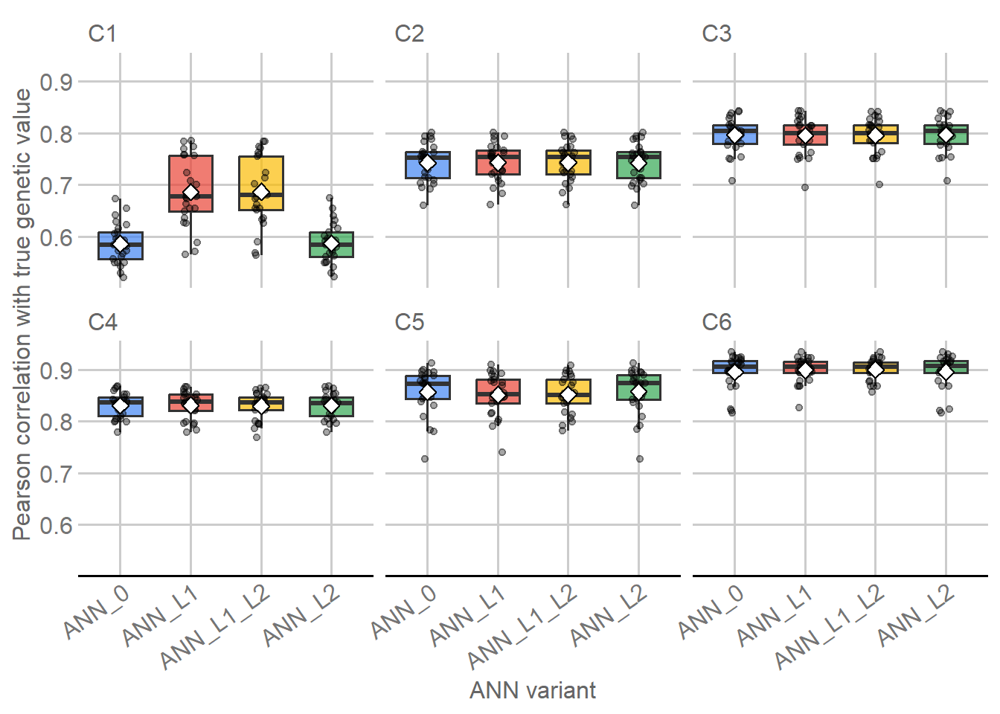
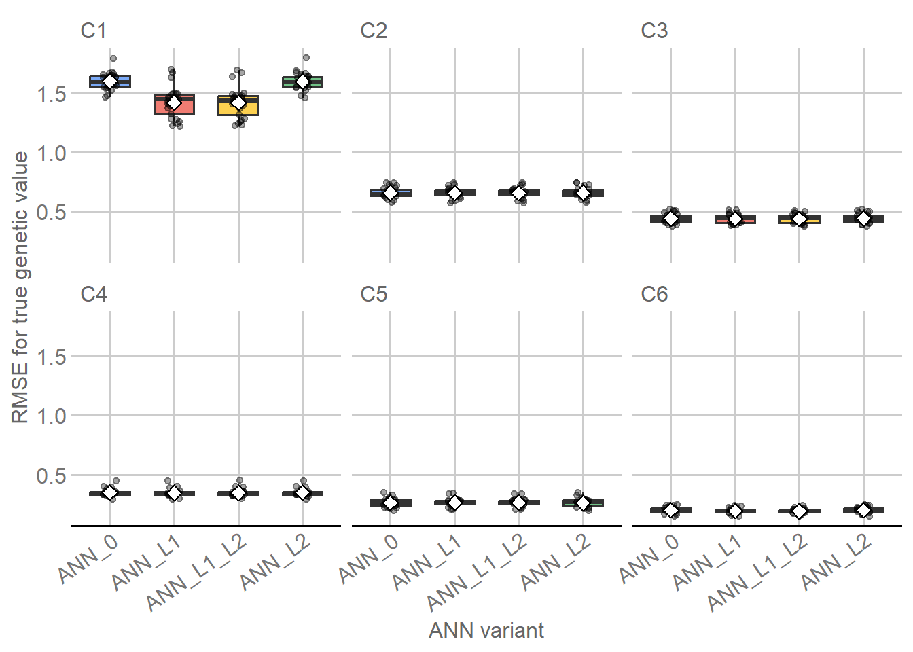

Last updated: 2026-09-04
Checks: 7 0
Knit directory:
Genomic-Prediction-using-Regularized-Artificial-Neural-Networks/
This reproducible R Markdown analysis was created with workflowr (version 1.7.2). The Checks tab describes the reproducibility checks that were applied when the results were created. The Past versions tab lists the development history.
Great! Since the R Markdown file has been committed to the Git repository, you know the exact version of the code that produced these results.
Great job! The global environment was empty. Objects defined in the global environment can affect the analysis in your R Markdown file in unknown ways. For reproduciblity it’s best to always run the code in an empty environment.
The command set.seed(20260821) was run prior to running
the code in the R Markdown file. Setting a seed ensures that any results
that rely on randomness, e.g. subsampling or permutations, are
reproducible.
Great job! Recording the operating system, R version, and package versions is critical for reproducibility.
Nice! There were no cached chunks for this analysis, so you can be confident that you successfully produced the results during this run.
Great job! Using relative paths to the files within your workflowr project makes it easier to run your code on other machines.
Great! You are using Git for version control. Tracking code development and connecting the code version to the results is critical for reproducibility.
The results in this page were generated with repository version 4873e55. See the Past versions tab to see a history of the changes made to the R Markdown and HTML files.
Note that you need to be careful to ensure that all relevant files for
the analysis have been committed to Git prior to generating the results
(you can use wflow_publish or
wflow_git_commit). workflowr only checks the R Markdown
file, but you know if there are other scripts or data files that it
depends on. Below is the status of the Git repository when the results
were generated:
Ignored files:
Ignored: .Rhistory
Ignored: .Rproj.user/
Ignored: .github/
Ignored: .local/
Ignored: code/legacy/
Ignored: data/dados_reais/Fenótipos 2014_2015_2016_C.arabica (1).xlsx
Ignored: data/dados_reais/Fenótipos 2014_2015_2016_C.arabica.xlsx
Ignored: data/dados_reais/FiltStep1_minQ10.0_minDP3_DPrange15-maxMeanDepth750_miss0.4_maf0.01_mac1_EMB_291701_SNPs_Raw.vcf.012.012
Ignored: data/dados_reais/FiltStep1_minQ10.0_minDP3_DPrange15-maxMeanDepth750_miss0.4_maf0.01_mac1_EMB_291701_SNPs_Raw.vcf.012.012.indv
Ignored: data/dados_reais/FiltStep1_minQ10.0_minDP3_DPrange15-maxMeanDepth750_miss0.4_maf0.01_mac1_EMB_291701_SNPs_Raw.vcf.012.012.pos
Ignored: data/dados_reais/FiltStep1_minQ10_minDP3_DPrange15-750_miss0.4_maf0.01_mac1_EMB_291701_filt1_snps_RAW.012.indv.txt
Ignored: data/dados_reais/FiltStep1_minQ10_minDP3_DPrange15-750_miss0.4_maf0.01_mac1_EMB_291701_filt1_snps_RAW.012.pos.txt
Ignored: data/dados_reais/FiltStep1_minQ10_minDP3_DPrange15-750_miss0.4_maf0.01_mac1_EMB_291701_filt1_snps_RAW.012.txt
Ignored: data/dados_reais/Rótulos C. arabica_Proj_Piloto.xlsx
Ignored: data/dados_reais/Rótulos Novos SNPs.xls
Ignored: data/dados_reais/dados_cafe.xlsx
Ignored: data/dados_reais/fpls-09-01934.pdf
Ignored: data/dados_reais/geno_real.rds
Ignored: data/dados_reais/pheno_real.rds
Ignored: data/dados_reais/plants-13-01876-v2.pdf
Ignored: data/dados_reais/pos_geno_real.rds
Ignored: renv/library/
Ignored: renv/staging/
Note that any generated files, e.g. HTML, png, CSS, etc., are not included in this status report because it is ok for generated content to have uncommitted changes.
These are the previous versions of the repository in which changes were
made to the R Markdown (analysis/simulated_data_ann.Rmd)
and HTML (docs/simulated_data_ann.html) files. If you’ve
configured a remote Git repository (see ?wflow_git_remote),
click on the hyperlinks in the table below to view the files as they
were in that past version.
| File | Version | Author | Date | Message |
|---|---|---|---|---|
| Rmd | 4873e55 | Weverton Gomes da Costa | 2026-09-04 | Refactor M04 ANN reader flow |
| html | c8124ab | WevertonGomesCosta | 2026-09-02 | Refresh integrated M01-M05 reproducibility metadata |
| html | 68bfc5e | WevertonGomesCosta | 2026-09-02 | Rebuild M04 after editorial revision |
| Rmd | 39c0662 | WevertonGomesCosta | 2026-09-02 | Complete M04 ANN editorial and didactic revision |
| Rmd | 2e534bc | WevertonGomesCosta | 2026-09-01 | Clarify M04 final ANN fitting workflow |
| Rmd | dbe719f | WevertonGomesCosta | 2026-09-01 | Organize M04 nested tuning and selected configurations |
| Rmd | 2c19730 | WevertonGomesCosta | 2026-09-01 | Clarify M04 ANN preprocessing training and ranking |
| Rmd | a6fd108 | WevertonGomesCosta | 2026-09-01 | Organize M04 ANN strategy inputs and tuning grid |
| Rmd | 747ae6c | WevertonGomesCosta | 2026-09-01 | Refine M04 configuration and canonical ANN parameters |
| html | 217e778 | WevertonGomesCosta | 2026-09-01 | Complete reader-first didactic cleanup |
| Rmd | dea5684 | github-actions[bot] | 2026-08-31 | Simplify tutorials while preserving audit contracts |
| html | 7a3fbcd | WevertonGomesCosta | 2026-08-31 | Refresh tutorial site after final build |
| Rmd | a56e596 | WevertonGomesCosta | 2026-08-31 | Expose canonical tutorial parameters and helpers |
| html | a56e596 | WevertonGomesCosta | 2026-08-31 | Expose canonical tutorial parameters and helpers |
| Rmd | cdd92f7 | WevertonGomesCosta | 2026-08-31 | Simplify GBLUP and ANN tutorial code |
| html | cdd92f7 | WevertonGomesCosta | 2026-08-31 | Simplify GBLUP and ANN tutorial code |
| Rmd | 93733ed | WevertonGomesCosta | 2026-08-31 | Restore tutorial code visibility |
| html | 93733ed | WevertonGomesCosta | 2026-08-31 | Restore tutorial code visibility |
| Rmd | c6ba331 | WevertonGomesCosta | 2026-08-31 | Refactor GBLUP and ANN modules as tutorials |
| html | c6ba331 | WevertonGomesCosta | 2026-08-31 | Refactor GBLUP and ANN modules as tutorials |
| html | f228245 | WevertonGomesCosta | 2026-08-31 | Publish reader-focused simulated workflow |
| Rmd | fd2cb67 | WevertonGomesCosta | 2026-08-31 | Refine canonical ANN results for readers |
| html | fa907f6 | WevertonGomesCosta | 2026-08-28 | Publish audited workflowr documentation |
| Rmd | 90377f2 | WevertonGomesCosta | 2026-08-28 | Narrow ANN selected-configuration display |
| Rmd | fc203a1 | WevertonGomesCosta | 2026-08-28 | Split ANN performance tables by evaluation target |
| Rmd | ba3bc2b | WevertonGomesCosta | 2026-08-28 | Remove empty ANN implementation headings |
| Rmd | 1d3ce7c | WevertonGomesCosta | 2026-08-28 | Define ANN objective symbols and prediction scale |
| Rmd | 35a1dbe | WevertonGomesCosta | 2026-08-28 | Explain ANN optimization controls for target readers |
| Rmd | 0b8a4f6 | WevertonGomesCosta | 2026-08-28 | Revise canonical workflow documentation and scientific narrative |
| html | 0b8a4f6 | WevertonGomesCosta | 2026-08-28 | Revise canonical workflow documentation and scientific narrative |
| html | 1d72f0a | WevertonGomesCosta | 2026-08-27 | Build site. |
| Rmd | d068fd6 | WevertonGomesCosta | 2026-08-27 | refactor: harden lightweight model runtime |
| html | f7779fd | WevertonGomesCosta | 2026-08-27 | Build site. |
| html | 3caadce | WevertonGomesCosta | 2026-08-27 | Build site. |
| Rmd | 0ec25da | WevertonGomesCosta | 2026-08-27 | refactor: organize canonical outputs and local runtime artifacts |
| html | e48bb57 | WevertonGomesCosta | 2026-08-27 | Build site. |
| Rmd | f9c736e | WevertonGomesCosta | 2026-08-27 | refactor: establish canonical simulated genomic prediction workflow |
| html | f9c736e | WevertonGomesCosta | 2026-08-27 | refactor: establish canonical simulated genomic prediction workflow |
This module fits four feed-forward neural-network variants to the
same six simulated scenarios and the same nested validation design
established in M02: ANN_0, ANN_L1,
ANN_L2, and ANN_L1_L2.
The scientific separation is fixed throughout the module:
Architecture and learning rate are selected with ANN_0
for each outer task and then held fixed across all four variants. The
regularized variants subsequently tune only their applicable penalties.
This creates a controlled comparison of regularization
conditional on the structure selected with ANN_0; it
does not claim that each regularized family would select the same
structure under an independent architecture search.
The four variants use the same multilayer perceptron and differ only in the penalties applied to network weights. Bias terms are not penalized.
library(knitr)
library(ggplot2)
library(ggthemes)
RUN_ANN_TUNING <- identical(
Sys.getenv("RUN_ANN_TUNING", "0"),
"1"
)
RUN_ANN <- identical(
Sys.getenv("RUN_ANN", "0"),
"1"
)
ANN_RUNTIME_REQUIRED <- RUN_ANN_TUNING || RUN_ANN
if (ANN_RUNTIME_REQUIRED) {
suppressPackageStartupMessages(library(torch))
}
SEED_GLOBAL <- 20260821L
MAX_EPOCHS <- 2000L
PATIENCE <- 25L
MIN_DELTA <- 1e-6
EARLY_VALIDATION_FRACTION <- 0.15
DROPOUT <- 0
FINAL_EPOCH_MAX_EPOCHS <- 3000L
MODEL_LEVELS <- c(
"ANN_0",
"ANN_L1",
"ANN_L2",
"ANN_L1_L2"
)
ann_variants <- data.frame(
Model = MODEL_LEVELS,
L1 = c("No", "Yes", "No", "Yes"),
L2 = c("No", "No", "Yes", "Yes"),
Interpretation = c(
"Unregularized reference ANN.",
"ANN with L1 weight regularization.",
"ANN with L2 weight regularization.",
"ANN with simultaneous L1 and L2 weight regularization."
),
stringsAsFactors = FALSE
)
ann_variants |>
knitr::kable(
format = "html",
caption = "ANN variants evaluated under the same validation design",
row.names = FALSE,
table.attr = 'class="table table-striped table-hover table-bordered"'
)| Model | L1 | L2 | Interpretation |
|---|---|---|---|
| ANN_0 | No | No | Unregularized reference ANN. |
| ANN_L1 | Yes | No | ANN with L1 weight regularization. |
| ANN_L2 | No | Yes | ANN with L2 weight regularization. |
| ANN_L1_L2 | Yes | Yes | ANN with simultaneous L1 and L2 weight regularization. |
fixed_controls <- data.frame(
Control = c(
"Activation",
"Optimizer",
"Dropout",
"Maximum tuning epochs",
"Patience",
"Minimum improvement",
"Early-validation fraction",
"Maximum epoch-selection epochs"
),
Value = c(
"ReLU",
"Adam",
DROPOUT,
MAX_EPOCHS,
PATIENCE,
MIN_DELTA,
EARLY_VALIDATION_FRACTION,
FINAL_EPOCH_MAX_EPOCHS
),
stringsAsFactors = FALSE
)
fixed_controls |>
knitr::kable(
format = "html",
caption = "Fixed ANN optimization controls",
row.names = FALSE,
table.attr = 'class="table table-striped table-hover table-bordered"'
)| Control | Value |
|---|---|
| Activation | ReLU |
| Optimizer | Adam |
| Dropout | 0 |
| Maximum tuning epochs | 2000 |
| Patience | 25 |
| Minimum improvement | 1e-06 |
| Early-validation fraction | 0.15 |
| Maximum epoch-selection epochs | 3000 |
The 2000-epoch and 3000-epoch values are maximum optimization caps, not claims of numerical convergence and not fixed training lengths. Early stopping can terminate an optimization run earlier when the prespecified patience rule is met.
The ANN branch reuses the M01 data object and the M02 nested validation object directly.
common <- readRDS(
"output/simulated/audit/preprocessed_simulated_common.rds"
)
cv <- readRDS(
"output/simulated/validation/simulated_cv_design.rds"
)
phenotype <- common$phenotype
geno <- common$genotype_m101
control <- common$scenario_control
ids <- seq_len(nrow(geno))
scenario_names <- colnames(phenotype)
input_summary <- data.frame(
Object = c(
"Phenotype",
"Genotype",
"Outer splits",
"Inner splits"
),
Structure = c(
paste(dim(phenotype), collapse = " x "),
paste(dim(geno), collapse = " x "),
length(cv$outer_splits),
sum(vapply(cv$inner_splits, length, integer(1)))
),
Role = c(
"Response used inside analysis subsets only.",
"4,010 marker predictors used by all ANN variants.",
"25 held-out outer evaluation partitions.",
"100 inner partitions used for nested tuning."
),
stringsAsFactors = FALSE
)
input_summary |>
knitr::kable(
format = "html",
caption = "Objects entering the ANN workflow",
row.names = FALSE,
table.attr = 'class="table table-striped table-hover table-bordered"'
)| Object | Structure | Role |
|---|---|---|
| Phenotype | 1000 x 6 | Response used inside analysis subsets only. |
| Genotype | 1000 x 4010 | 4,010 marker predictors used by all ANN variants. |
| Outer splits | 25 | 25 held-out outer evaluation partitions. |
| Inner splits | 100 | 100 inner partitions used for nested tuning. |
The same 1,000 individuals, 4,010 markers, six scenarios, 25 outer splits, and 100 inner splits are therefore used by all ANN variants. No ANN variant creates its own validation partition.
For standardized marker vector \(\mathbf{x}\), each hidden layer applies
\[ \mathbf{h}^{(\ell)}= \operatorname{ReLU} \left( \mathbf{W}_{\ell}\mathbf{h}^{(\ell-1)}+ \mathbf{b}_{\ell} \right). \]
The final layer is linear because the response is continuous. Training minimizes
\[ \mathcal{L}= \operatorname{MSE}(y,\hat y) + \lambda_1\sum_j |w_j| + \frac{\lambda_2}{2}\sum_j w_j^2. \]
ANN_0 sets both penalties to zero, ANN_L1
uses only \(\lambda_1\),
ANN_L2 uses only \(\lambda_2\), and ANN_L1_L2
uses both. Adam is run with weight_decay = 0, so L2 enters
only through the explicit penalty shown above.
The runtime implementation below is evaluated only when tuning or
final ANN fitting is explicitly requested. The initialize
and forward methods are the network definition required by
the torch API; the analysis itself does not use separate
local helper functions for preprocessing, fitting, ranking, or metric
calculation.
cuda_available <- torch::cuda_is_available()
requested_device <- tolower(Sys.getenv("ANN_DEVICE", "auto"))
ANN_DEVICE_LABEL <- if (requested_device == "cuda") {
"cuda"
} else if (requested_device == "cpu") {
"cpu"
} else if (cuda_available) {
"cuda"
} else {
"cpu"
}
ANN_DEVICE <- torch::torch_device(ANN_DEVICE_LABEL)
TorchGenomicMLP <- torch::nn_module(
"TorchGenomicMLP",
initialize = function(input_dim, hidden_units) {
self$linears <- torch::nn_module_list()
previous <- as.integer(input_dim)
for (hidden in hidden_units) {
self$linears$append(
torch::nn_linear(
previous,
as.integer(hidden)
)
)
previous <- as.integer(hidden)
}
self$output <- torch::nn_linear(previous, 1L)
},
forward = function(x) {
for (layer_index in seq_len(length(self$linears))) {
x <- torch::nnf_relu(
self$linears[[layer_index]](x)
)
}
self$output(x)
}
)The architecture catalog is intentionally bounded. Architecture and
learning rate are selected first with ANN_0; L1/L2
penalties are selected only after that shared structure has been fixed
for the outer task.
ARCHITECTURES <- list(
`2` = c(2L),
`4` = c(4L),
`8` = c(8L),
`16` = c(16L),
`32` = c(32L),
`8-4` = c(8L, 4L),
`16-8` = c(16L, 8L),
`32-16` = c(32L, 16L),
`64-32` = c(64L, 32L)
)
LEARNING_RATES <- c(
1.25e-4,
2.5e-4,
5e-4,
1e-3
)
L1_VALUES <- c(
1e-5,
1e-4,
1e-3,
1e-2,
3e-2,
1e-1
)
L2_VALUES <- c(
1e-5,
1e-4,
1e-3,
1e-2
)
L1_L2_GRID <- expand.grid(
L1 = L1_VALUES,
L2 = L2_VALUES,
KEEP.OUT.ATTRS = FALSE,
stringsAsFactors = FALSE
)
structure_grid <- expand.grid(
Architecture = names(ARCHITECTURES),
Learning_rate = LEARNING_RATES,
KEEP.OUT.ATTRS = FALSE,
stringsAsFactors = FALSE
)
structure_grid$Model <- "ANN_0"
structure_grid$L1 <- 0
structure_grid$L2 <- 0
l1_grid <- data.frame(
Model = "ANN_L1",
L1 = L1_VALUES,
L2 = 0,
stringsAsFactors = FALSE
)
l2_grid <- data.frame(
Model = "ANN_L2",
L1 = 0,
L2 = L2_VALUES,
stringsAsFactors = FALSE
)
l1l2_grid <- data.frame(
Model = "ANN_L1_L2",
L1 = L1_L2_GRID$L1,
L2 = L1_L2_GRID$L2,
stringsAsFactors = FALSE
)
search_summary <- data.frame(
Stage = c(
"Architecture + learning rate with ANN_0",
"ANN_L1 penalty",
"ANN_L2 penalty",
"ANN_L1_L2 penalties"
),
Candidates = c(
nrow(structure_grid),
nrow(l1_grid),
nrow(l2_grid),
nrow(l1l2_grid)
),
Inner_fits_per_outer_task = 4L * c(
nrow(structure_grid),
nrow(l1_grid),
nrow(l2_grid),
nrow(l1l2_grid)
),
stringsAsFactors = FALSE
)
search_summary |>
knitr::kable(
format = "html",
caption = "Prespecified ANN tuning search",
row.names = FALSE,
table.attr = 'class="table table-striped table-hover table-bordered"'
)| Stage | Candidates | Inner_fits_per_outer_task |
|---|---|---|
| Architecture + learning rate with ANN_0 | 36 | 144 |
| ANN_L1 penalty | 6 | 24 |
| ANN_L2 penalty | 4 | 16 |
| ANN_L1_L2 penalties | 24 | 96 |
CANDIDATES_PER_TASK <- sum(search_summary$Candidates)
INNER_FITS_PER_TASK <- 4L * CANDIDATES_PER_TASKThe search contains 70 candidate configurations per outer task: 36 architecture-learning-rate combinations, 6 L1 values, 4 L2 values, and 24 positive L1-L2 pairs. With four inner folds, that yields 280 candidate-fold fits per outer task and 42,000 inner fits across the 150 scenario-by-split outer tasks.
Selection of 64-32 or another boundary value is
interpreted descriptively as boundary occupancy of this prespecified
search space. It does not trigger a post-hoc enlargement of the
search.
For every inner fold, the 600 inner-analysis individuals are split again only for optimization: 15% form an early-validation subset and the remainder form the fitting subset. The 200 frozen inner-assessment individuals remain untouched until the candidate has been trained and its best early-validation checkpoint has been restored.
Marker means, marker standard deviations, phenotype mean, and
phenotype standard deviation are estimated only from the current
fitting subset. Those fitted transformations are then applied
unchanged to the early-validation and inner-assessment observations.
Markers with fitting-set standard deviation below 1e-8
receive unit scale to avoid division by zero.
The complete tuning code below writes the same historical output
schemas when RUN_ANN_TUNING=1. The normal page build leaves
this expensive stage disabled and reads the existing saved outputs
instead.
dir.create(
"output/simulated/ann/tuning",
recursive = TRUE,
showWarnings = FALSE
)
outer_map <- unique(
cv$outer_assignments[
, c("Repetition", "OuterFold", "SplitID")
]
)
outer_map <- outer_map[
order(outer_map$Repetition, outer_map$OuterFold),
,
drop = FALSE
]
task_table <- merge(
data.frame(
Scenario = scenario_names,
stringsAsFactors = FALSE
),
outer_map,
by = NULL
)
task_table <- task_table[
order(
match(task_table$Scenario, scenario_names),
task_table$Repetition,
task_table$OuterFold
),
,
drop = FALSE
]
task_table$Fold <- task_table$OuterFold
task_table$TaskID <- paste(
task_table$Scenario,
task_table$SplitID,
sep = "_"
)
rownames(task_table) <- NULL
selected_task_rows <- vector("list", nrow(task_table))
candidate_task_rows <- vector("list", nrow(task_table))
fold_task_rows <- vector("list", nrow(task_table))
task_seconds <- numeric(nrow(task_table))
run_start <- proc.time()[["elapsed"]]
for (task_index in seq_len(nrow(task_table))) {
task <- task_table[task_index, , drop = FALSE]
scenario_index <- match(task$Scenario, scenario_names)
inner <- cv$inner_splits[[task$SplitID]]
task_start <- proc.time()[["elapsed"]]
bundles <- vector("list", 4L)
for (inner_fold in 1:4) {
inner_split <- inner[[paste0("I", inner_fold)]]
validation_seed <-
SEED_GLOBAL +
scenario_index * 1000000L +
task$Repetition * 10000L +
task$OuterFold * 1000L +
inner_fold * 10L
set.seed(validation_seed)
n_validation <- as.integer(
round(
length(inner_split$analysis_ids) *
EARLY_VALIDATION_FRACTION
)
)
validation_ids <- sort(
sample(
inner_split$analysis_ids,
n_validation,
replace = FALSE
)
)
fit_ids <- sort(
setdiff(
inner_split$analysis_ids,
validation_ids
)
)
fit_index <- match(fit_ids, ids)
validation_index <- match(validation_ids, ids)
assessment_index <- match(
inner_split$assessment_ids,
ids
)
x_center <- colMeans(
geno[fit_index, , drop = FALSE]
)
x_scale <- apply(
geno[fit_index, , drop = FALSE],
2,
sd
)
zero_variance <- x_scale < 1e-8
x_scale[zero_variance] <- 1
y_center <- mean(
phenotype[fit_index, scenario_index]
)
y_scale <- max(
sd(phenotype[fit_index, scenario_index]),
1e-8
)
x_fit <- sweep(
sweep(
geno[fit_index, , drop = FALSE],
2,
x_center,
"-"
),
2,
x_scale,
"/"
)
x_validation <- sweep(
sweep(
geno[validation_index, , drop = FALSE],
2,
x_center,
"-"
),
2,
x_scale,
"/"
)
x_assessment <- sweep(
sweep(
geno[assessment_index, , drop = FALSE],
2,
x_center,
"-"
),
2,
x_scale,
"/"
)
y_fit <-
(phenotype[fit_index, scenario_index] - y_center) /
y_scale
y_validation <-
(phenotype[validation_index, scenario_index] - y_center) /
y_scale
bundles[[inner_fold]] <- list(
x_fit = x_fit,
x_validation = x_validation,
x_assessment = x_assessment,
y_fit = y_fit,
y_validation = y_validation,
y_assessment = phenotype[
assessment_index,
scenario_index
],
y_center = y_center,
y_scale = y_scale,
zero_variance_markers = sum(zero_variance)
)
}
base_seed <-
SEED_GLOBAL +
scenario_index * 10000000L +
task$Repetition * 100000L +
task$OuterFold * 10000L
structure_summary_rows <- vector(
"list",
nrow(structure_grid)
)
structure_fold_rows <- vector(
"list",
nrow(structure_grid)
)
for (candidate_index in seq_len(nrow(structure_grid))) {
candidate <- structure_grid[
candidate_index,
,
drop = FALSE
]
fold_rows <- vector("list", 4L)
for (inner_fold in 1:4) {
bundle <- bundles[[inner_fold]]
fit_seed <- base_seed + 1000000L + inner_fold
set.seed(as.integer(fit_seed))
torch::torch_manual_seed(as.integer(fit_seed))
x_fit_tensor <- torch::torch_tensor(
bundle$x_fit,
dtype = torch::torch_float()
)$to(device = ANN_DEVICE)
y_fit_tensor <- torch::torch_tensor(
matrix(bundle$y_fit, ncol = 1),
dtype = torch::torch_float()
)$to(device = ANN_DEVICE)
x_validation_tensor <- torch::torch_tensor(
bundle$x_validation,
dtype = torch::torch_float()
)$to(device = ANN_DEVICE)
y_validation_tensor <- torch::torch_tensor(
matrix(bundle$y_validation, ncol = 1),
dtype = torch::torch_float()
)$to(device = ANN_DEVICE)
x_assessment_tensor <- torch::torch_tensor(
bundle$x_assessment,
dtype = torch::torch_float()
)$to(device = ANN_DEVICE)
model <- TorchGenomicMLP(
ncol(bundle$x_fit),
ARCHITECTURES[[candidate$Architecture]]
)$to(device = ANN_DEVICE)
optimizer <- torch::optim_adam(
params = model$parameters,
lr = candidate$Learning_rate,
weight_decay = 0
)
best_validation_loss <- Inf
checkpoint_epoch <- 1L
state <- model$state_dict()
checkpoint_state <- state
for (state_name in names(state)) {
checkpoint_state[[state_name]] <-
state[[state_name]]$detach()$clone()
}
stale_epochs <- 0L
last_epoch <- 0L
stopped_by_patience <- FALSE
if (ANN_DEVICE_LABEL == "cuda") {
torch::cuda_synchronize()
}
fit_start <- proc.time()[["elapsed"]]
for (epoch in seq_len(MAX_EPOCHS)) {
last_epoch <- epoch
model$train()
optimizer$zero_grad()
prediction <- model(x_fit_tensor)
penalty_l1 <- prediction$sum() * 0
penalty_l2 <- prediction$sum() * 0
for (layer_index in seq_len(length(model$linears))) {
weight <- model$linears[[layer_index]]$weight
penalty_l1 <- penalty_l1 + weight$abs()$sum()
penalty_l2 <- penalty_l2 + weight$pow(2)$sum()
}
weight <- model$output$weight
penalty_l1 <- penalty_l1 + weight$abs()$sum()
penalty_l2 <- penalty_l2 + weight$pow(2)$sum()
loss <-
torch::nnf_mse_loss(
prediction,
y_fit_tensor
) +
candidate$L1 * penalty_l1 +
(candidate$L2 / 2) * penalty_l2
loss$backward()
optimizer$step()
model$eval()
validation_loss <- torch::with_no_grad({
torch::nnf_mse_loss(
model(x_validation_tensor),
y_validation_tensor
)
})
validation_value <- as.numeric(
validation_loss$to(
device = torch::torch_device("cpu")
)
)
improved <-
validation_value <
best_validation_loss - MIN_DELTA
if (improved) {
best_validation_loss <- validation_value
checkpoint_epoch <- epoch
state <- model$state_dict()
checkpoint_state <- state
for (state_name in names(state)) {
checkpoint_state[[state_name]] <-
state[[state_name]]$detach()$clone()
}
stale_epochs <- 0L
} else {
stale_epochs <- stale_epochs + 1L
}
if (stale_epochs >= PATIENCE) {
stopped_by_patience <- TRUE
break
}
}
if (ANN_DEVICE_LABEL == "cuda") {
torch::cuda_synchronize()
}
fit_seconds <-
proc.time()[["elapsed"]] - fit_start
model$load_state_dict(checkpoint_state)
model$eval()
prediction_start <- proc.time()[["elapsed"]]
prediction_scaled <- torch::with_no_grad({
as.numeric(
model(x_assessment_tensor)$to(
device = torch::torch_device("cpu")
)
)
})
prediction_seconds <-
proc.time()[["elapsed"]] - prediction_start
prediction_assessment <-
prediction_scaled * bundle$y_scale +
bundle$y_center
observed_assessment <- bundle$y_assessment
fold_rows[[inner_fold]] <- data.frame(
Model = "ANN_0",
CandidateID = candidate_index,
Architecture = candidate$Architecture,
Learning_rate = candidate$Learning_rate,
L1 = 0,
L2 = 0,
InnerFold = inner_fold,
RMSE = sqrt(
mean(
(prediction_assessment - observed_assessment)^2
)
),
Correlation = cor(
prediction_assessment,
observed_assessment
),
MAE = mean(
abs(
prediction_assessment - observed_assessment
)
),
EarlyStop_epoch = as.integer(checkpoint_epoch),
Last_epoch = as.integer(last_epoch),
Stopped_by_patience = stopped_by_patience,
Hit_epoch_ceiling =
last_epoch >= MAX_EPOCHS &&
!stopped_by_patience,
Fit_seconds = fit_seconds,
Prediction_seconds = prediction_seconds,
Status = "ok",
Error = NA_character_,
stringsAsFactors = FALSE
)
}
folds <- do.call(rbind, fold_rows)
hidden <- ARCHITECTURES[[candidate$Architecture]]
network_inputs <- c(ncol(geno), hidden)
network_outputs <- c(hidden, 1L)
structure_summary_rows[[candidate_index]] <- data.frame(
Model = "ANN_0",
CandidateID = candidate_index,
Architecture = candidate$Architecture,
Learning_rate = candidate$Learning_rate,
L1 = 0,
L2 = 0,
Inner_folds_ok = 4L,
Mean_RMSE = mean(folds$RMSE),
Mean_Correlation = mean(folds$Correlation),
Mean_MAE = mean(folds$MAE),
Median_EarlyStop_epoch = median(folds$EarlyStop_epoch),
Max_Last_epoch = max(folds$Last_epoch),
N_epoch_ceiling = sum(folds$Hit_epoch_ceiling),
Parameters = sum(
network_inputs * network_outputs +
network_outputs
),
Penalty = 0,
Status = "ok",
stringsAsFactors = FALSE
)
structure_fold_rows[[candidate_index]] <- folds
}
structure_summary <- do.call(
rbind,
structure_summary_rows
)
structure_folds <- do.call(
rbind,
structure_fold_rows
)
structure_summary <- structure_summary[
order(
structure_summary$Mean_RMSE,
-structure_summary$Mean_Correlation,
structure_summary$Parameters,
structure_summary$Penalty,
structure_summary$Learning_rate,
structure_summary$CandidateID
),
,
drop = FALSE
]
chosen_structure <- structure_summary[1, , drop = FALSE]
selected_architecture <- chosen_structure$Architecture
selected_learning_rate <- chosen_structure$Learning_rate
penalty_grids <- list(
ANN_L1 = l1_grid,
ANN_L2 = l2_grid,
ANN_L1_L2 = l1l2_grid
)
penalty_summary_all <- list()
penalty_fold_all <- list()
penalty_selected <- list()
for (model_name in names(penalty_grids)) {
grid <- penalty_grids[[model_name]]
model_summary_rows <- vector("list", nrow(grid))
model_fold_rows <- vector("list", nrow(grid))
for (candidate_index in seq_len(nrow(grid))) {
fold_rows <- vector("list", 4L)
for (inner_fold in 1:4) {
bundle <- bundles[[inner_fold]]
fit_seed <- base_seed + 2000000L + inner_fold
set.seed(as.integer(fit_seed))
torch::torch_manual_seed(as.integer(fit_seed))
x_fit_tensor <- torch::torch_tensor(
bundle$x_fit,
dtype = torch::torch_float()
)$to(device = ANN_DEVICE)
y_fit_tensor <- torch::torch_tensor(
matrix(bundle$y_fit, ncol = 1),
dtype = torch::torch_float()
)$to(device = ANN_DEVICE)
x_validation_tensor <- torch::torch_tensor(
bundle$x_validation,
dtype = torch::torch_float()
)$to(device = ANN_DEVICE)
y_validation_tensor <- torch::torch_tensor(
matrix(bundle$y_validation, ncol = 1),
dtype = torch::torch_float()
)$to(device = ANN_DEVICE)
x_assessment_tensor <- torch::torch_tensor(
bundle$x_assessment,
dtype = torch::torch_float()
)$to(device = ANN_DEVICE)
model <- TorchGenomicMLP(
ncol(bundle$x_fit),
ARCHITECTURES[[selected_architecture]]
)$to(device = ANN_DEVICE)
optimizer <- torch::optim_adam(
params = model$parameters,
lr = selected_learning_rate,
weight_decay = 0
)
best_validation_loss <- Inf
checkpoint_epoch <- 1L
state <- model$state_dict()
checkpoint_state <- state
for (state_name in names(state)) {
checkpoint_state[[state_name]] <-
state[[state_name]]$detach()$clone()
}
stale_epochs <- 0L
last_epoch <- 0L
stopped_by_patience <- FALSE
if (ANN_DEVICE_LABEL == "cuda") {
torch::cuda_synchronize()
}
fit_start <- proc.time()[["elapsed"]]
for (epoch in seq_len(MAX_EPOCHS)) {
last_epoch <- epoch
model$train()
optimizer$zero_grad()
prediction <- model(x_fit_tensor)
penalty_l1 <- prediction$sum() * 0
penalty_l2 <- prediction$sum() * 0
for (layer_index in seq_len(length(model$linears))) {
weight <- model$linears[[layer_index]]$weight
penalty_l1 <- penalty_l1 + weight$abs()$sum()
penalty_l2 <- penalty_l2 + weight$pow(2)$sum()
}
weight <- model$output$weight
penalty_l1 <- penalty_l1 + weight$abs()$sum()
penalty_l2 <- penalty_l2 + weight$pow(2)$sum()
loss <-
torch::nnf_mse_loss(
prediction,
y_fit_tensor
) +
grid$L1[candidate_index] * penalty_l1 +
(grid$L2[candidate_index] / 2) * penalty_l2
loss$backward()
optimizer$step()
model$eval()
validation_loss <- torch::with_no_grad({
torch::nnf_mse_loss(
model(x_validation_tensor),
y_validation_tensor
)
})
validation_value <- as.numeric(
validation_loss$to(
device = torch::torch_device("cpu")
)
)
improved <-
validation_value <
best_validation_loss - MIN_DELTA
if (improved) {
best_validation_loss <- validation_value
checkpoint_epoch <- epoch
state <- model$state_dict()
checkpoint_state <- state
for (state_name in names(state)) {
checkpoint_state[[state_name]] <-
state[[state_name]]$detach()$clone()
}
stale_epochs <- 0L
} else {
stale_epochs <- stale_epochs + 1L
}
if (stale_epochs >= PATIENCE) {
stopped_by_patience <- TRUE
break
}
}
if (ANN_DEVICE_LABEL == "cuda") {
torch::cuda_synchronize()
}
fit_seconds <-
proc.time()[["elapsed"]] - fit_start
model$load_state_dict(checkpoint_state)
model$eval()
prediction_start <- proc.time()[["elapsed"]]
prediction_scaled <- torch::with_no_grad({
as.numeric(
model(x_assessment_tensor)$to(
device = torch::torch_device("cpu")
)
)
})
prediction_seconds <-
proc.time()[["elapsed"]] - prediction_start
prediction_assessment <-
prediction_scaled * bundle$y_scale +
bundle$y_center
observed_assessment <- bundle$y_assessment
fold_rows[[inner_fold]] <- data.frame(
Model = model_name,
CandidateID = candidate_index,
Architecture = selected_architecture,
Learning_rate = selected_learning_rate,
L1 = grid$L1[candidate_index],
L2 = grid$L2[candidate_index],
InnerFold = inner_fold,
RMSE = sqrt(
mean(
(prediction_assessment - observed_assessment)^2
)
),
Correlation = cor(
prediction_assessment,
observed_assessment
),
MAE = mean(
abs(
prediction_assessment - observed_assessment
)
),
EarlyStop_epoch = as.integer(checkpoint_epoch),
Last_epoch = as.integer(last_epoch),
Stopped_by_patience = stopped_by_patience,
Hit_epoch_ceiling =
last_epoch >= MAX_EPOCHS &&
!stopped_by_patience,
Fit_seconds = fit_seconds,
Prediction_seconds = prediction_seconds,
Status = "ok",
Error = NA_character_,
stringsAsFactors = FALSE
)
}
folds <- do.call(rbind, fold_rows)
hidden <- ARCHITECTURES[[selected_architecture]]
network_inputs <- c(ncol(geno), hidden)
network_outputs <- c(hidden, 1L)
model_summary_rows[[candidate_index]] <- data.frame(
Model = model_name,
CandidateID = candidate_index,
Architecture = selected_architecture,
Learning_rate = selected_learning_rate,
L1 = grid$L1[candidate_index],
L2 = grid$L2[candidate_index],
Inner_folds_ok = 4L,
Mean_RMSE = mean(folds$RMSE),
Mean_Correlation = mean(folds$Correlation),
Mean_MAE = mean(folds$MAE),
Median_EarlyStop_epoch = median(folds$EarlyStop_epoch),
Max_Last_epoch = max(folds$Last_epoch),
N_epoch_ceiling = sum(folds$Hit_epoch_ceiling),
Parameters = sum(
network_inputs * network_outputs +
network_outputs
),
Penalty =
grid$L1[candidate_index] +
grid$L2[candidate_index],
Status = "ok",
stringsAsFactors = FALSE
)
model_fold_rows[[candidate_index]] <- folds
}
model_summary <- do.call(rbind, model_summary_rows)
model_folds <- do.call(rbind, model_fold_rows)
model_summary <- model_summary[
order(
model_summary$Mean_RMSE,
-model_summary$Mean_Correlation,
model_summary$Parameters,
model_summary$Penalty,
model_summary$Learning_rate,
model_summary$CandidateID
),
,
drop = FALSE
]
penalty_summary_all[[model_name]] <- model_summary
penalty_fold_all[[model_name]] <- model_folds
penalty_selected[[model_name]] <-
model_summary[1, , drop = FALSE]
}
selected_table <- rbind(
data.frame(
Model = "ANN_0",
Architecture = selected_architecture,
Learning_rate = selected_learning_rate,
L1 = 0,
L2 = 0,
Inner_RMSE = chosen_structure$Mean_RMSE,
Inner_Correlation = chosen_structure$Mean_Correlation,
Inner_MAE = chosen_structure$Mean_MAE,
stringsAsFactors = FALSE
),
data.frame(
Model = "ANN_L1",
Architecture = selected_architecture,
Learning_rate = selected_learning_rate,
L1 = penalty_selected$ANN_L1$L1,
L2 = penalty_selected$ANN_L1$L2,
Inner_RMSE = penalty_selected$ANN_L1$Mean_RMSE,
Inner_Correlation = penalty_selected$ANN_L1$Mean_Correlation,
Inner_MAE = penalty_selected$ANN_L1$Mean_MAE,
stringsAsFactors = FALSE
),
data.frame(
Model = "ANN_L2",
Architecture = selected_architecture,
Learning_rate = selected_learning_rate,
L1 = penalty_selected$ANN_L2$L1,
L2 = penalty_selected$ANN_L2$L2,
Inner_RMSE = penalty_selected$ANN_L2$Mean_RMSE,
Inner_Correlation = penalty_selected$ANN_L2$Mean_Correlation,
Inner_MAE = penalty_selected$ANN_L2$Mean_MAE,
stringsAsFactors = FALSE
),
data.frame(
Model = "ANN_L1_L2",
Architecture = selected_architecture,
Learning_rate = selected_learning_rate,
L1 = penalty_selected$ANN_L1_L2$L1,
L2 = penalty_selected$ANN_L1_L2$L2,
Inner_RMSE = penalty_selected$ANN_L1_L2$Mean_RMSE,
Inner_Correlation = penalty_selected$ANN_L1_L2$Mean_Correlation,
Inner_MAE = penalty_selected$ANN_L1_L2$Mean_MAE,
stringsAsFactors = FALSE
)
)
tuning_summary <- rbind(
structure_summary,
penalty_summary_all$ANN_L1,
penalty_summary_all$ANN_L2,
penalty_summary_all$ANN_L1_L2
)
tuning_folds <- rbind(
structure_folds,
penalty_fold_all$ANN_L1,
penalty_fold_all$ANN_L2,
penalty_fold_all$ANN_L1_L2
)
for (column_name in c(
"Scenario",
"Repetition",
"Fold",
"SplitID",
"TaskID"
)) {
selected_table[[column_name]] <- task[[column_name]]
tuning_summary[[column_name]] <- task[[column_name]]
tuning_folds[[column_name]] <- task[[column_name]]
}
selected_task_rows[[task_index]] <- selected_table
candidate_task_rows[[task_index]] <- tuning_summary
fold_task_rows[[task_index]] <- tuning_folds
task_seconds[task_index] <-
proc.time()[["elapsed"]] - task_start
cat(
sprintf(
"[%03d/%03d] %s | %.1f s | arch=%s lr=%g\n",
task_index,
nrow(task_table),
task$TaskID,
task_seconds[task_index],
selected_architecture,
selected_learning_rate
)
)
}
selected_configurations <- do.call(
rbind,
selected_task_rows
)
candidate_summary <- do.call(
rbind,
candidate_task_rows
)
fold_results <- do.call(
rbind,
fold_task_rows
)
rownames(selected_configurations) <- NULL
rownames(candidate_summary) <- NULL
rownames(fold_results) <- NULL
run_seconds <-
proc.time()[["elapsed"]] - run_start
manifest <- list(
analysis = "canonical_simulated_ann_tuning",
dataset = "simulated",
mode = "full",
pilot_task = NA_character_,
config_id = ANN_TUNING_CONFIG_ID,
seed_global = SEED_GLOBAL,
models = MODEL_LEVELS,
architectures = ARCHITECTURES,
learning_rates = LEARNING_RATES,
l1_values = L1_VALUES,
l2_values = L2_VALUES,
l1_l2_grid = L1_L2_GRID,
optimizer = "Adam",
activation = "ReLU",
dropout = DROPOUT,
max_epochs = MAX_EPOCHS,
final_train_epochs = TUNING_V1_COMPATIBILITY_TOKEN,
patience = PATIENCE,
min_delta = MIN_DELTA,
early_validation_fraction = EARLY_VALIDATION_FRACTION,
primary_tuning_metric = "mean inner-assessment RMSE",
secondary_tuning_metric = "mean inner-assessment correlation",
epoch_used_in_candidate_ranking = FALSE,
outer_assessment_used = FALSE,
true_genetic_value_used = FALSE,
architecture_lr_shared_across_models = TRUE,
candidates_per_task = CANDIDATES_PER_TASK,
inner_fits_per_task = INNER_FITS_PER_TASK,
number_tasks = nrow(task_table),
selected_rows = nrow(selected_configurations),
candidate_rows = nrow(candidate_summary),
fold_rows = nrow(fold_results),
torch_version = as.character(packageVersion("torch")),
device = ANN_DEVICE_LABEL,
cuda_available = cuda_available,
current_session_seconds = run_seconds,
checkpoint_task_seconds = sum(task_seconds),
timestamp = as.character(Sys.time())
)
manifest_table <- data.frame(
Field = c(
"analysis",
"mode",
"config_id",
"candidates_per_task",
"inner_fits_per_task",
"tasks",
"outer_assessment_used",
"true_genetic_value_used"
),
Value = c(
manifest$analysis,
manifest$mode,
manifest$config_id,
manifest$candidates_per_task,
manifest$inner_fits_per_task,
manifest$number_tasks,
FALSE,
FALSE
),
stringsAsFactors = FALSE
)
saveRDS(
selected_configurations,
SELECTED_RDS,
compress = "gzip"
)
saveRDS(
candidate_summary,
CANDIDATE_RDS,
compress = "gzip"
)
saveRDS(
fold_results,
FOLD_RDS,
compress = "gzip"
)
saveRDS(
manifest,
RUN_RDS,
compress = "gzip"
)
saveRDS(
manifest,
MANIFEST_RDS,
compress = "gzip"
)
write.csv(
selected_configurations,
SELECTED_CSV,
row.names = FALSE
)
write.csv(
candidate_summary,
CANDIDATE_CSV,
row.names = FALSE
)
write.csv(
fold_results,
FOLD_CSV,
row.names = FALSE
)
write.csv(
manifest_table,
MANIFEST_CSV,
row.names = FALSE
)Within each tuning stage, candidate ranking follows the same deterministic hierarchy:
Early-stop epoch information is stored as an optimization diagnostic but does not participate in candidate ranking.
The normal page build reads the previously completed tuning outputs rather than rerunning the 42,000 candidate-fold fits.
selected_configurations <- readRDS(SELECTED_RDS)
candidate_summary <- readRDS(CANDIDATE_RDS)
fold_results <- readRDS(FOLD_RDS)
tuning_metadata <- readRDS(RUN_RDS)
saved_tuning_summary <- data.frame(
Object = c(
"Selected configurations",
"Candidate summaries",
"Inner candidate-fold results"
),
Rows = c(
nrow(selected_configurations),
nrow(candidate_summary),
nrow(fold_results)
),
stringsAsFactors = FALSE
)
saved_tuning_summary |>
knitr::kable(
format = "html",
caption = "Stored ANN tuning results",
row.names = FALSE,
table.attr = 'class="table table-striped table-hover table-bordered"'
)| Object | Rows |
|---|---|
| Selected configurations | 600 |
| Candidate summaries | 10500 |
| Inner candidate-fold results | 42000 |
Architecture and learning rate are shared across all four ANN variants within an outer task. Their frequencies therefore describe the structure selected before model-specific penalty tuning.
task_structure <- unique(
selected_configurations[
, c("TaskID", "Architecture", "Learning_rate")
]
)
architecture_frequency <- as.data.frame(
table(task_structure$Architecture),
stringsAsFactors = FALSE
)
names(architecture_frequency) <- c(
"Architecture",
"Selected_tasks"
)
learning_rate_frequency <- as.data.frame(
table(task_structure$Learning_rate),
stringsAsFactors = FALSE
)
names(learning_rate_frequency) <- c(
"Learning_rate",
"Selected_tasks"
)
architecture_frequency |>
knitr::kable(
format = "html",
caption = "Selected shared architecture across the 150 outer tasks",
row.names = FALSE,
table.attr = 'class="table table-striped table-hover table-bordered"'
)| Architecture | Selected_tasks |
|---|---|
| 16 | 7 |
| 16-8 | 6 |
| 32 | 20 |
| 32-16 | 26 |
| 4 | 1 |
| 64-32 | 89 |
| 8 | 1 |
learning_rate_frequency |>
knitr::kable(
format = "html",
caption = "Selected shared learning rate across the 150 outer tasks",
row.names = FALSE,
table.attr = 'class="table table-striped table-hover table-bordered"'
)| Learning_rate | Selected_tasks |
|---|---|
| 0.000125 | 98 |
| 0.00025 | 22 |
| 5e-04 | 23 |
| 0.001 | 7 |
The optimization diagnostics below are descriptive. Reaching an epoch cap or a search boundary does not retrospectively alter the tuning grid.
optimization_summary <- data.frame(
Diagnostic = c(
"Inner candidate-fold fits",
"Median best early-stop epoch",
"Median last epoch",
"Fits stopped by patience",
"Fits reaching 2000-epoch cap"
),
Value = c(
nrow(fold_results),
median(fold_results$EarlyStop_epoch, na.rm = TRUE),
median(fold_results$Last_epoch, na.rm = TRUE),
sum(fold_results$Stopped_by_patience, na.rm = TRUE),
sum(fold_results$Hit_epoch_ceiling, na.rm = TRUE)
),
stringsAsFactors = FALSE
)
optimization_summary |>
knitr::kable(
format = "html",
caption = "ANN tuning optimization diagnostics",
row.names = FALSE,
table.attr = 'class="table table-striped table-hover table-bordered"'
)| Diagnostic | Value |
|---|---|
| Inner candidate-fold fits | 42000 |
| Median best early-stop epoch | 14 |
| Median last epoch | 39 |
| Fits stopped by patience | 41881 |
| Fits reaching 2000-epoch cap | 119 |
Nested tuning returns one architecture, learning rate, and applicable
penalty coefficient(s) for each
Scenario × outer split × ANN variant. Final fitting then
uses those choices without reopening the hyperparameter search.
The final sequence is:
Best_epoch under the 3000-epoch optimization
cap;Best_epoch;The complete final-fitting code is shown directly below without local training, preprocessing, or metric wrappers.
dir.create(
"output/simulated/ann/final",
recursive = TRUE,
showWarnings = FALSE
)
outer_map <- unique(
cv$outer_assignments[
, c("Repetition", "OuterFold", "SplitID")
]
)
outer_map <- outer_map[
order(outer_map$Repetition, outer_map$OuterFold),
,
drop = FALSE
]
final_task_table <- merge(
data.frame(
Scenario = scenario_names,
stringsAsFactors = FALSE
),
outer_map,
by = NULL
)
final_task_table <- final_task_table[
order(
match(final_task_table$Scenario, scenario_names),
final_task_table$Repetition,
final_task_table$OuterFold
),
,
drop = FALSE
]
final_task_table$Fold <- final_task_table$OuterFold
final_task_table$TaskID <- paste(
final_task_table$Scenario,
final_task_table$SplitID,
sep = "_"
)
rownames(final_task_table) <- NULL
result_task_rows <- vector(
"list",
nrow(final_task_table)
)
prediction_task_rows <- vector(
"list",
nrow(final_task_table)
)
epoch_task_rows <- vector(
"list",
nrow(final_task_table)
)
final_task_seconds <- numeric(
nrow(final_task_table)
)
run_start <- proc.time()[["elapsed"]]
for (task_index in seq_len(nrow(final_task_table))) {
task <- final_task_table[
task_index,
,
drop = FALSE
]
scenario_index <- match(
task$Scenario,
scenario_names
)
outer <- cv$outer_splits[[task$SplitID]]
selected_for_task <- selected_configurations[
selected_configurations$TaskID == task$TaskID,
,
drop = FALSE
]
seed_base <-
SEED_GLOBAL +
scenario_index * 10000000L +
task$Repetition * 100000L +
task$OuterFold * 10000L
split_seed <- seed_base + 8000000L
epoch_seed <- seed_base + 8100000L
final_fit_seed <- seed_base + 8200000L
result_rows <- vector(
"list",
length(MODEL_LEVELS)
)
prediction_rows <- vector(
"list",
length(MODEL_LEVELS)
)
epoch_rows <- vector(
"list",
length(MODEL_LEVELS)
)
task_start <- proc.time()[["elapsed"]]
for (model_index in seq_along(MODEL_LEVELS)) {
model_name <- MODEL_LEVELS[model_index]
config <- selected_for_task[
selected_for_task$Model == model_name,
,
drop = FALSE
]
# Select Best_epoch using only the 800 outer-analysis individuals.
set.seed(split_seed)
n_validation <- as.integer(
round(
length(outer$analysis_ids) *
EARLY_VALIDATION_FRACTION
)
)
validation_ids <- sort(
sample(
outer$analysis_ids,
n_validation,
replace = FALSE
)
)
fit_ids <- sort(
setdiff(
outer$analysis_ids,
validation_ids
)
)
fit_index <- match(fit_ids, ids)
validation_index <- match(validation_ids, ids)
x_center <- colMeans(
geno[fit_index, , drop = FALSE]
)
x_scale <- apply(
geno[fit_index, , drop = FALSE],
2,
sd
)
x_scale[x_scale < 1e-8] <- 1
y_center <- mean(
phenotype[fit_index, scenario_index]
)
y_scale <- max(
sd(phenotype[fit_index, scenario_index]),
1e-8
)
x_fit <- sweep(
sweep(
geno[fit_index, , drop = FALSE],
2,
x_center,
"-"
),
2,
x_scale,
"/"
)
x_validation <- sweep(
sweep(
geno[validation_index, , drop = FALSE],
2,
x_center,
"-"
),
2,
x_scale,
"/"
)
y_fit <-
(phenotype[fit_index, scenario_index] - y_center) /
y_scale
y_validation <-
(phenotype[validation_index, scenario_index] - y_center) /
y_scale
set.seed(as.integer(epoch_seed))
torch::torch_manual_seed(as.integer(epoch_seed))
x_fit_tensor <- torch::torch_tensor(
x_fit,
dtype = torch::torch_float()
)$to(device = ANN_DEVICE)
y_fit_tensor <- torch::torch_tensor(
matrix(y_fit, ncol = 1),
dtype = torch::torch_float()
)$to(device = ANN_DEVICE)
x_validation_tensor <- torch::torch_tensor(
x_validation,
dtype = torch::torch_float()
)$to(device = ANN_DEVICE)
y_validation_tensor <- torch::torch_tensor(
matrix(y_validation, ncol = 1),
dtype = torch::torch_float()
)$to(device = ANN_DEVICE)
model <- TorchGenomicMLP(
ncol(x_fit),
ARCHITECTURES[[config$Architecture]]
)$to(device = ANN_DEVICE)
optimizer <- torch::optim_adam(
params = model$parameters,
lr = config$Learning_rate,
weight_decay = 0
)
best_validation_loss <- Inf
best_epoch <- 1L
state <- model$state_dict()
best_state <- state
for (state_name in names(state)) {
best_state[[state_name]] <-
state[[state_name]]$detach()$clone()
}
stale_epochs <- 0L
last_epoch <- 0L
stopped_by_patience <- FALSE
if (ANN_DEVICE_LABEL == "cuda") {
torch::cuda_synchronize()
}
epoch_fit_start <- proc.time()[["elapsed"]]
for (epoch in seq_len(FINAL_EPOCH_MAX_EPOCHS)) {
last_epoch <- epoch
model$train()
optimizer$zero_grad()
prediction <- model(x_fit_tensor)
penalty_l1 <- prediction$sum() * 0
penalty_l2 <- prediction$sum() * 0
for (layer_index in seq_len(length(model$linears))) {
weight <- model$linears[[layer_index]]$weight
penalty_l1 <- penalty_l1 + weight$abs()$sum()
penalty_l2 <- penalty_l2 + weight$pow(2)$sum()
}
weight <- model$output$weight
penalty_l1 <- penalty_l1 + weight$abs()$sum()
penalty_l2 <- penalty_l2 + weight$pow(2)$sum()
loss <-
torch::nnf_mse_loss(
prediction,
y_fit_tensor
) +
config$L1 * penalty_l1 +
(config$L2 / 2) * penalty_l2
loss$backward()
optimizer$step()
model$eval()
validation_loss <- torch::with_no_grad({
torch::nnf_mse_loss(
model(x_validation_tensor),
y_validation_tensor
)
})
validation_value <- as.numeric(
validation_loss$to(
device = torch::torch_device("cpu")
)
)
improved <-
validation_value <
best_validation_loss - MIN_DELTA
if (improved) {
best_validation_loss <- validation_value
best_epoch <- epoch
state <- model$state_dict()
best_state <- state
for (state_name in names(state)) {
best_state[[state_name]] <-
state[[state_name]]$detach()$clone()
}
stale_epochs <- 0L
} else {
stale_epochs <- stale_epochs + 1L
}
if (stale_epochs >= PATIENCE) {
stopped_by_patience <- TRUE
break
}
}
if (ANN_DEVICE_LABEL == "cuda") {
torch::cuda_synchronize()
}
epoch_fit_seconds <-
proc.time()[["elapsed"]] - epoch_fit_start
model$load_state_dict(best_state)
model$eval()
validation_prediction_scaled <- torch::with_no_grad({
as.numeric(
model(x_validation_tensor)$to(
device = torch::torch_device("cpu")
)
)
})
validation_prediction <-
validation_prediction_scaled * y_scale +
y_center
validation_observed <- phenotype[
validation_index,
scenario_index
]
validation_rmse <- sqrt(
mean(
(validation_prediction - validation_observed)^2
)
)
validation_correlation <- cor(
validation_prediction,
validation_observed
)
# Refit all 800 outer-analysis individuals for exactly Best_epoch.
train_index <- match(outer$analysis_ids, ids)
assessment_index <- match(
outer$assessment_ids,
ids
)
x_center <- colMeans(
geno[train_index, , drop = FALSE]
)
x_scale <- apply(
geno[train_index, , drop = FALSE],
2,
sd
)
zero_variance <- x_scale < 1e-8
x_scale[zero_variance] <- 1
y_center <- mean(
phenotype[train_index, scenario_index]
)
y_scale <- max(
sd(phenotype[train_index, scenario_index]),
1e-8
)
x_train <- sweep(
sweep(
geno[train_index, , drop = FALSE],
2,
x_center,
"-"
),
2,
x_scale,
"/"
)
x_assessment <- sweep(
sweep(
geno[assessment_index, , drop = FALSE],
2,
x_center,
"-"
),
2,
x_scale,
"/"
)
y_train <-
(phenotype[train_index, scenario_index] - y_center) /
y_scale
set.seed(as.integer(final_fit_seed))
torch::torch_manual_seed(as.integer(final_fit_seed))
x_train_tensor <- torch::torch_tensor(
x_train,
dtype = torch::torch_float()
)$to(device = ANN_DEVICE)
y_train_tensor <- torch::torch_tensor(
matrix(y_train, ncol = 1),
dtype = torch::torch_float()
)$to(device = ANN_DEVICE)
x_assessment_tensor <- torch::torch_tensor(
x_assessment,
dtype = torch::torch_float()
)$to(device = ANN_DEVICE)
model <- TorchGenomicMLP(
ncol(x_train),
ARCHITECTURES[[config$Architecture]]
)$to(device = ANN_DEVICE)
optimizer <- torch::optim_adam(
params = model$parameters,
lr = config$Learning_rate,
weight_decay = 0
)
if (ANN_DEVICE_LABEL == "cuda") {
torch::cuda_synchronize()
}
final_fit_start <- proc.time()[["elapsed"]]
for (epoch in seq_len(as.integer(best_epoch))) {
model$train()
optimizer$zero_grad()
prediction <- model(x_train_tensor)
penalty_l1 <- prediction$sum() * 0
penalty_l2 <- prediction$sum() * 0
for (layer_index in seq_len(length(model$linears))) {
weight <- model$linears[[layer_index]]$weight
penalty_l1 <- penalty_l1 + weight$abs()$sum()
penalty_l2 <- penalty_l2 + weight$pow(2)$sum()
}
weight <- model$output$weight
penalty_l1 <- penalty_l1 + weight$abs()$sum()
penalty_l2 <- penalty_l2 + weight$pow(2)$sum()
loss <-
torch::nnf_mse_loss(
prediction,
y_train_tensor
) +
config$L1 * penalty_l1 +
(config$L2 / 2) * penalty_l2
loss$backward()
optimizer$step()
}
if (ANN_DEVICE_LABEL == "cuda") {
torch::cuda_synchronize()
}
final_fit_seconds <-
proc.time()[["elapsed"]] - final_fit_start
model$eval()
prediction_start <- proc.time()[["elapsed"]]
predicted_scaled <- torch::with_no_grad({
as.numeric(
model(x_assessment_tensor)$to(
device = torch::torch_device("cpu")
)
)
})
prediction_seconds <-
proc.time()[["elapsed"]] - prediction_start
predicted_value <-
predicted_scaled * y_scale + y_center
# Held-out targets are accessed only after prediction already exists.
observed <- phenotype[
assessment_index,
scenario_index
]
true_genetic_value <- common$true_genetic_value[
assessment_index,
scenario_index
]
genetic_correlation <- cor(
predicted_value,
true_genetic_value
)
genetic_rmse <- sqrt(
mean(
(predicted_value - true_genetic_value)^2
)
)
genetic_mae <- mean(
abs(
predicted_value - true_genetic_value
)
)
genetic_bias <- mean(
predicted_value - true_genetic_value
)
genetic_slope <- as.numeric(
coef(
lm(
true_genetic_value ~ predicted_value
)
)[2]
)
genetic_r2 <- 1 -
sum(
(true_genetic_value - predicted_value)^2
) /
sum(
(
true_genetic_value -
mean(true_genetic_value)
)^2
)
phenotype_correlation <- cor(
predicted_value,
observed
)
phenotype_rmse <- sqrt(
mean(
(predicted_value - observed)^2
)
)
phenotype_mae <- mean(
abs(
predicted_value - observed
)
)
phenotype_bias <- mean(
predicted_value - observed
)
phenotype_slope <- as.numeric(
coef(
lm(observed ~ predicted_value)
)[2]
)
phenotype_r2 <- 1 -
sum(
(observed - predicted_value)^2
) /
sum(
(observed - mean(observed))^2
)
meta <- control[
control$Scenario == task$Scenario,
,
drop = FALSE
]
result_rows[[model_index]] <- data.frame(
Dataset = "simulated",
Scenario = task$Scenario,
QTL_N = meta$QTL_N,
H2_nominal = meta$H2_nominal,
Repetition = task$Repetition,
Fold = task$OuterFold,
SplitID = task$SplitID,
TaskID = task$TaskID,
Model = model_name,
Architecture = config$Architecture,
Learning_rate = config$Learning_rate,
L1 = config$L1,
L2 = config$L2,
Best_epoch = as.integer(best_epoch),
Epoch_Last = as.integer(last_epoch),
Epoch_Stopped_by_patience = stopped_by_patience,
Epoch_Hit_ceiling =
last_epoch >= FINAL_EPOCH_MAX_EPOCHS &&
!stopped_by_patience,
Inner_RMSE = config$Inner_RMSE,
Inner_Correlation = config$Inner_Correlation,
Inner_MAE = config$Inner_MAE,
N_train = 800L,
N_test = 200L,
N_pred_finite = sum(is.finite(predicted_value)),
N_zero_variance_markers = sum(zero_variance),
Genetic_Correlation = genetic_correlation,
Genetic_RMSE = genetic_rmse,
Genetic_MAE = genetic_mae,
Genetic_Bias = genetic_bias,
Genetic_Slope = genetic_slope,
Genetic_R2 = genetic_r2,
Phenotype_Correlation = phenotype_correlation,
Phenotype_RMSE = phenotype_rmse,
Phenotype_MAE = phenotype_mae,
Phenotype_Bias = phenotype_bias,
Phenotype_Slope = phenotype_slope,
Phenotype_R2 = phenotype_r2,
Epoch_selection_seconds = epoch_fit_seconds,
Final_fit_seconds = final_fit_seconds,
Predict_seconds = prediction_seconds,
Status = "ok",
Error = NA_character_,
stringsAsFactors = FALSE
)
prediction_rows[[model_index]] <- data.frame(
Dataset = "simulated",
Scenario = task$Scenario,
QTL_N = meta$QTL_N,
H2_nominal = meta$H2_nominal,
Repetition = task$Repetition,
Fold = task$OuterFold,
SplitID = task$SplitID,
TaskID = task$TaskID,
Model = model_name,
Architecture = config$Architecture,
Learning_rate = config$Learning_rate,
L1 = config$L1,
L2 = config$L2,
Best_epoch = as.integer(best_epoch),
ID = ids[assessment_index],
Observed_Phenotype = observed,
True_Genetic_Value = true_genetic_value,
Predicted_Value = predicted_value,
Status = "ok",
stringsAsFactors = FALSE
)
epoch_rows[[model_index]] <- data.frame(
Scenario = task$Scenario,
Repetition = task$Repetition,
Fold = task$OuterFold,
SplitID = task$SplitID,
TaskID = task$TaskID,
Model = model_name,
Architecture = config$Architecture,
Learning_rate = config$Learning_rate,
L1 = config$L1,
L2 = config$L2,
Best_epoch = as.integer(best_epoch),
Last_epoch = as.integer(last_epoch),
Stopped_by_patience = stopped_by_patience,
Hit_epoch_ceiling =
last_epoch >= FINAL_EPOCH_MAX_EPOCHS &&
!stopped_by_patience,
Validation_RMSE = validation_rmse,
Validation_Correlation = validation_correlation,
N_epoch_fit = length(fit_ids),
N_epoch_validation = length(validation_ids),
Fit_seconds = epoch_fit_seconds,
stringsAsFactors = FALSE
)
}
result_task_rows[[task_index]] <- do.call(
rbind,
result_rows
)
prediction_task_rows[[task_index]] <- do.call(
rbind,
prediction_rows
)
epoch_task_rows[[task_index]] <- do.call(
rbind,
epoch_rows
)
final_task_seconds[task_index] <-
proc.time()[["elapsed"]] - task_start
cat(
sprintf(
"[%03d/%03d] %s | final %.1f min\n",
task_index,
nrow(final_task_table),
task$TaskID,
final_task_seconds[task_index] / 60
)
)
}
results <- do.call(rbind, result_task_rows)
predictions <- do.call(rbind, prediction_task_rows)
epoch_selection <- do.call(rbind, epoch_task_rows)
rownames(results) <- NULL
rownames(predictions) <- NULL
rownames(epoch_selection) <- NULL
run_seconds <-
proc.time()[["elapsed"]] - run_start
final_meta <- list(
dataset = "simulated",
analysis = "canonical_simulated_ann",
mode = "full",
pilot_task = NA_character_,
config_id = FINAL_CONFIG_ID,
tuning_config_id = ANN_TUNING_CONFIG_ID,
seed_global = SEED_GLOBAL,
models = MODEL_LEVELS,
tuning_max_epochs = MAX_EPOCHS,
final_epoch_max_epochs = FINAL_EPOCH_MAX_EPOCHS,
patience = PATIENCE,
min_delta = MIN_DELTA,
early_validation_fraction = EARLY_VALIDATION_FRACTION,
final_refit_rule =
"Best_epoch selected inside outer-analysis, then refit on all 800",
outer_assessment_used_in_tuning = FALSE,
outer_assessment_used_in_epoch_selection = FALSE,
true_genetic_value_used_in_selection = FALSE,
number_tasks = nrow(final_task_table),
model_task_rows = nrow(results),
prediction_rows = nrow(predictions),
epoch_selection_rows = nrow(epoch_selection),
torch_version = as.character(packageVersion("torch")),
device = ANN_DEVICE_LABEL,
cuda_available = cuda_available,
current_session_seconds = run_seconds,
checkpoint_task_seconds = sum(final_task_seconds),
timestamp = as.character(Sys.time())
)
saveRDS(
results,
FINAL_RESULTS_RDS,
compress = "gzip"
)
saveRDS(
predictions,
FINAL_PREDICTIONS_RDS,
compress = "gzip"
)
saveRDS(
epoch_selection,
FINAL_EPOCH_RDS,
compress = "gzip"
)
saveRDS(
final_meta,
FINAL_RUN_RDS,
compress = "gzip"
)
write.csv(
results,
FINAL_RESULTS_CSV,
row.names = FALSE
)
write.csv(
predictions,
FINAL_PREDICTIONS_CSV,
row.names = FALSE
)
write.csv(
epoch_selection,
FINAL_EPOCH_CSV,
row.names = FALSE
)The normal page build reads the completed final ANN outputs. This keeps the scientific results fixed while allowing the explanation, tables, and figures to be rebuilt without reexecuting tuning or final fitting.
results <- readRDS(FINAL_RESULTS_RDS)
predictions <- readRDS(FINAL_PREDICTIONS_RDS)
epoch_selection <- readRDS(FINAL_EPOCH_RDS)
final_meta <- readRDS(FINAL_RUN_RDS)
final_output_summary <- data.frame(
Object = c(
"Model-task results",
"Held-out predictions",
"Epoch selections"
),
Rows = c(
nrow(results),
nrow(predictions),
nrow(epoch_selection)
),
Unique_tasks = c(
length(unique(results$TaskID)),
length(unique(predictions$TaskID)),
length(unique(epoch_selection$TaskID))
),
stringsAsFactors = FALSE
)
final_output_summary |>
knitr::kable(
format = "html",
caption = "Stored final ANN result structure",
row.names = FALSE,
table.attr = 'class="table table-striped table-hover table-bordered"'
)| Object | Rows | Unique_tasks |
|---|---|---|
| Model-task results | 600 | 150 |
| Held-out predictions | 120000 | 150 |
| Epoch selections | 600 | 150 |
The stored benchmark contains 600 model-task
results, 120,000 held-out predictions, and
600 epoch-selection records. The historical
Status = "ok" field indicates that a fit returned and
produced stored predictions; it is not interpreted as a formal proof of
numerical convergence.
Recovery of the known true genetic value is the primary evaluation target. Phenotype prediction is retained as a secondary target because phenotype also contains residual variation.
ok <- results[
results$Status == "ok",
,
drop = FALSE
]
scenario_performance <- aggregate(
cbind(
Genetic_Correlation,
Genetic_RMSE,
Genetic_MAE,
Genetic_Bias,
Genetic_Slope,
Genetic_R2,
Phenotype_Correlation,
Phenotype_RMSE,
Phenotype_MAE,
Phenotype_Bias,
Phenotype_Slope,
Phenotype_R2
) ~ Scenario + Model + QTL_N + H2_nominal,
data = ok,
FUN = mean,
na.rm = TRUE
)
scenario_performance <- scenario_performance[
order(
match(scenario_performance$Scenario, scenario_names),
match(scenario_performance$Model, MODEL_LEVELS)
),
,
drop = FALSE
]
scenario_performance[
, c(
"Scenario",
"Model",
"QTL_N",
"H2_nominal",
"Genetic_Correlation",
"Genetic_RMSE",
"Genetic_MAE",
"Genetic_Bias",
"Genetic_Slope",
"Genetic_R2"
)
] |>
knitr::kable(
format = "html",
digits = 4,
caption = "Primary evaluation: mean outer-split ANN performance against true genetic value",
row.names = FALSE,
table.attr = 'class="table table-striped table-hover table-bordered"'
)| Scenario | Model | QTL_N | H2_nominal | Genetic_Correlation | Genetic_RMSE | Genetic_MAE | Genetic_Bias | Genetic_Slope | Genetic_R2 |
|---|---|---|---|---|---|---|---|---|---|
| C1 | ANN_0 | 8 | 0.7 | 0.5863 | 1.5974 | 1.2814 | -0.0276 | 0.8516 | 0.3208 |
| C1 | ANN_L1 | 8 | 0.7 | 0.6861 | 1.4194 | 1.1454 | -0.0402 | 1.0909 | 0.4604 |
| C1 | ANN_L2 | 8 | 0.7 | 0.5869 | 1.5972 | 1.2806 | -0.0303 | 0.8495 | 0.3210 |
| C1 | ANN_L1_L2 | 8 | 0.7 | 0.6868 | 1.4177 | 1.1441 | -0.0424 | 1.0871 | 0.4617 |
| C2 | ANN_0 | 40 | 0.7 | 0.7427 | 0.6589 | 0.5262 | -0.0320 | 1.0311 | 0.5153 |
| C2 | ANN_L1 | 40 | 0.7 | 0.7432 | 0.6561 | 0.5256 | -0.0276 | 1.0545 | 0.5197 |
| C2 | ANN_L2 | 40 | 0.7 | 0.7431 | 0.6582 | 0.5257 | -0.0340 | 1.0329 | 0.5163 |
| C2 | ANN_L1_L2 | 40 | 0.7 | 0.7431 | 0.6560 | 0.5255 | -0.0279 | 1.0571 | 0.5198 |
| C3 | ANN_0 | 80 | 0.5 | 0.7965 | 0.4431 | 0.3527 | 0.0028 | 0.9925 | 0.5875 |
| C3 | ANN_L1 | 80 | 0.5 | 0.7956 | 0.4405 | 0.3508 | 0.0049 | 1.0315 | 0.5929 |
| C3 | ANN_L2 | 80 | 0.5 | 0.7967 | 0.4431 | 0.3527 | 0.0027 | 0.9923 | 0.5876 |
| C3 | ANN_L1_L2 | 80 | 0.5 | 0.7960 | 0.4398 | 0.3503 | 0.0056 | 1.0330 | 0.5942 |
| C4 | ANN_0 | 120 | 0.5 | 0.8309 | 0.3505 | 0.2798 | -0.0204 | 0.9888 | 0.6359 |
| C4 | ANN_L1 | 120 | 0.5 | 0.8310 | 0.3467 | 0.2769 | -0.0224 | 1.0081 | 0.6438 |
| C4 | ANN_L2 | 120 | 0.5 | 0.8306 | 0.3499 | 0.2791 | -0.0208 | 0.9918 | 0.6373 |
| C4 | ANN_L1_L2 | 120 | 0.5 | 0.8298 | 0.3474 | 0.2772 | -0.0180 | 1.0249 | 0.6425 |
| C5 | ANN_0 | 240 | 0.3 | 0.8570 | 0.2635 | 0.2101 | 0.0112 | 0.8951 | 0.6779 |
| C5 | ANN_L1 | 240 | 0.3 | 0.8512 | 0.2657 | 0.2128 | 0.0073 | 1.0238 | 0.6728 |
| C5 | ANN_L2 | 240 | 0.3 | 0.8574 | 0.2629 | 0.2096 | 0.0113 | 0.8934 | 0.6794 |
| C5 | ANN_L1_L2 | 240 | 0.3 | 0.8517 | 0.2671 | 0.2137 | 0.0077 | 1.0211 | 0.6700 |
| C6 | ANN_0 | 480 | 0.3 | 0.8956 | 0.2023 | 0.1623 | -0.0296 | 0.9441 | 0.7494 |
| C6 | ANN_L1 | 480 | 0.3 | 0.8992 | 0.1961 | 0.1572 | -0.0292 | 1.0033 | 0.7655 |
| C6 | ANN_L2 | 480 | 0.3 | 0.8959 | 0.2026 | 0.1624 | -0.0287 | 0.9439 | 0.7487 |
| C6 | ANN_L1_L2 | 480 | 0.3 | 0.9002 | 0.1944 | 0.1557 | -0.0300 | 1.0099 | 0.7698 |
Here, larger Pearson correlation means stronger linear association with the known genetic signal. Smaller RMSE and MAE indicate smaller absolute prediction error. Bias near zero and calibration slope near one describe calibration on the held-out scale.
scenario_performance[
, c(
"Scenario",
"Model",
"Phenotype_Correlation",
"Phenotype_RMSE",
"Phenotype_MAE",
"Phenotype_Bias",
"Phenotype_Slope",
"Phenotype_R2"
)
] |>
knitr::kable(
format = "html",
digits = 4,
caption = "Secondary evaluation: mean outer-split ANN performance against phenotype",
row.names = FALSE,
table.attr = 'class="table table-striped table-hover table-bordered"'
)| Scenario | Model | Phenotype_Correlation | Phenotype_RMSE | Phenotype_MAE | Phenotype_Bias | Phenotype_Slope | Phenotype_R2 |
|---|---|---|---|---|---|---|---|
| C1 | ANN_0 | 0.4834 | 2.0270 | 1.6230 | -0.0276 | 0.8287 | 0.2108 |
| C1 | ANN_L1 | 0.5737 | 1.8836 | 1.5113 | -0.0402 | 1.0787 | 0.3179 |
| C1 | ANN_L2 | 0.4846 | 2.0255 | 1.6220 | -0.0303 | 0.8276 | 0.2120 |
| C1 | ANN_L1_L2 | 0.5748 | 1.8816 | 1.5090 | -0.0424 | 1.0758 | 0.3194 |
| C2 | ANN_0 | 0.6419 | 0.8392 | 0.6639 | -0.0320 | 1.0036 | 0.3800 |
| C2 | ANN_L1 | 0.6432 | 0.8353 | 0.6603 | -0.0276 | 1.0273 | 0.3856 |
| C2 | ANN_L2 | 0.6422 | 0.8386 | 0.6633 | -0.0340 | 1.0053 | 0.3807 |
| C2 | ANN_L1_L2 | 0.6431 | 0.8351 | 0.6603 | -0.0279 | 1.0298 | 0.3858 |
| C3 | ANN_0 | 0.5887 | 0.7712 | 0.6259 | 0.0028 | 0.9927 | 0.3052 |
| C3 | ANN_L1 | 0.5878 | 0.7702 | 0.6245 | 0.0049 | 1.0334 | 0.3078 |
| C3 | ANN_L2 | 0.5889 | 0.7711 | 0.6258 | 0.0027 | 0.9930 | 0.3052 |
| C3 | ANN_L1_L2 | 0.5879 | 0.7697 | 0.6243 | 0.0056 | 1.0342 | 0.3087 |
| C4 | ANN_0 | 0.5802 | 0.7039 | 0.5723 | -0.0204 | 1.0008 | 0.3074 |
| C4 | ANN_L1 | 0.5805 | 0.7018 | 0.5709 | -0.0224 | 1.0212 | 0.3117 |
| C4 | ANN_L2 | 0.5801 | 0.7036 | 0.5722 | -0.0208 | 1.0041 | 0.3082 |
| C4 | ANN_L1_L2 | 0.5797 | 0.7025 | 0.5713 | -0.0180 | 1.0379 | 0.3104 |
| C5 | ANN_0 | 0.4583 | 0.7597 | 0.6228 | 0.0112 | 0.8645 | 0.1829 |
| C5 | ANN_L1 | 0.4547 | 0.7594 | 0.6209 | 0.0073 | 0.9817 | 0.1838 |
| C5 | ANN_L2 | 0.4585 | 0.7597 | 0.6228 | 0.0113 | 0.8631 | 0.1831 |
| C5 | ANN_L1_L2 | 0.4541 | 0.7602 | 0.6217 | 0.0077 | 0.9772 | 0.1819 |
| C6 | ANN_0 | 0.4718 | 0.6565 | 0.5340 | -0.0296 | 0.9014 | 0.1945 |
| C6 | ANN_L1 | 0.4716 | 0.6541 | 0.5326 | -0.0292 | 0.9499 | 0.2009 |
| C6 | ANN_L2 | 0.4715 | 0.6569 | 0.5342 | -0.0287 | 0.9007 | 0.1935 |
| C6 | ANN_L1_L2 | 0.4725 | 0.6533 | 0.5320 | -0.0300 | 0.9569 | 0.2029 |
The next figures display all 25 outer-split results for each scenario and ANN variant. Their purpose is descriptive: repeated outer folds overlap in the individuals used for model fitting, so the 25 values are not treated as 25 statistically independent replicates or as inferential uncertainty.
p_ann_correlation <- ggplot(
ok,
aes(
x = Model,
y = Genetic_Correlation,
fill = Model
)
) +
geom_boxplot(
width = 0.62,
outlier.shape = NA,
alpha = 0.70
) +
geom_point(
position = position_jitter(
width = 0.10,
height = 0,
seed = SEED_GLOBAL + 401L
),
alpha = 0.35,
size = 1.4
) +
stat_summary(
fun = mean,
geom = "point",
shape = 23,
size = 2.8,
fill = "white"
) +
facet_wrap(~ Scenario, ncol = 3) +
scale_fill_gdocs() +
labs(
x = "ANN variant",
y = "Pearson correlation with true genetic value",
fill = NULL
) +
theme_gdocs() +
theme(
legend.position = "none",
axis.text.x = element_text(
angle = 35,
hjust = 1
)
)
print(p_ann_correlation)
Held-out true genetic-value Pearson correlation for the four ANN variants across the 25 outer splits in each scenario. White diamonds indicate model means within scenario.
p_ann_rmse <- ggplot(
ok,
aes(
x = Model,
y = Genetic_RMSE,
fill = Model
)
) +
geom_boxplot(
width = 0.62,
outlier.shape = NA,
alpha = 0.70
) +
geom_point(
position = position_jitter(
width = 0.10,
height = 0,
seed = SEED_GLOBAL + 402L
),
alpha = 0.35,
size = 1.4
) +
stat_summary(
fun = mean,
geom = "point",
shape = 23,
size = 2.8,
fill = "white"
) +
facet_wrap(~ Scenario, ncol = 3) +
scale_fill_gdocs() +
labs(
x = "ANN variant",
y = "RMSE for true genetic value",
fill = NULL
) +
theme_gdocs() +
theme(
legend.position = "none",
axis.text.x = element_text(
angle = 35,
hjust = 1
)
)
print(p_ann_rmse)
Held-out true genetic-value RMSE for the four ANN variants across the 25 outer splits in each scenario. Lower values indicate smaller prediction error; white diamonds indicate model means within scenario.
overall_ann <- aggregate(
cbind(
Genetic_Correlation,
Genetic_RMSE,
Genetic_R2
) ~ Model,
data = ok,
FUN = mean,
na.rm = TRUE
)
overall_ann <- overall_ann[
match(MODEL_LEVELS, overall_ann$Model),
,
drop = FALSE
]
overall_ann |>
knitr::kable(
format = "html",
digits = 4,
caption = "Overall ANN performance against true genetic value",
row.names = FALSE,
table.attr = 'class="table table-striped table-hover table-bordered"'
)| Model | Genetic_Correlation | Genetic_RMSE | Genetic_R2 |
|---|---|---|---|
| ANN_0 | 0.7848 | 0.5860 | 0.5812 |
| ANN_L1 | 0.8011 | 0.5541 | 0.6092 |
| ANN_L2 | 0.7851 | 0.5856 | 0.5817 |
| ANN_L1_L2 | 0.8013 | 0.5537 | 0.6097 |
Across all outer tasks, ANN-L1+L2 has the highest mean genetic correlation and lowest mean genetic RMSE among the four ANN variants, but its advantage over ANN-L1 is very small. ANN-L2 remains close to ANN_0. Within this bounded search space, the observed regularization gain is therefore driven mainly by the L1 component. The formal task-matched comparison with GBLUP-ADE is reserved for M05.